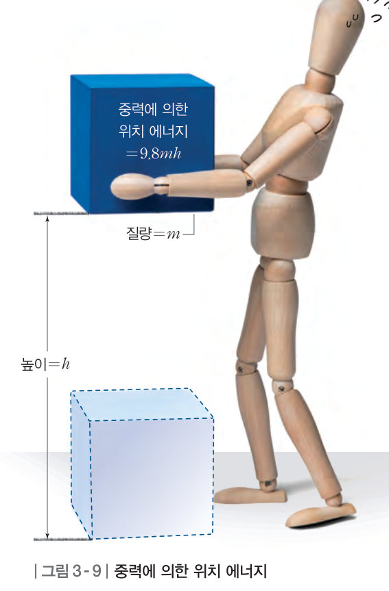
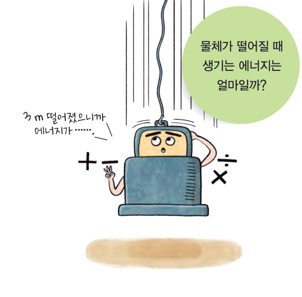
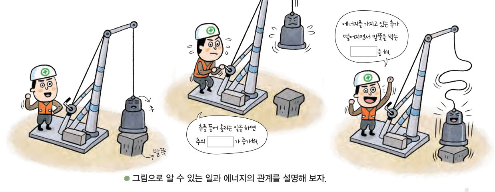
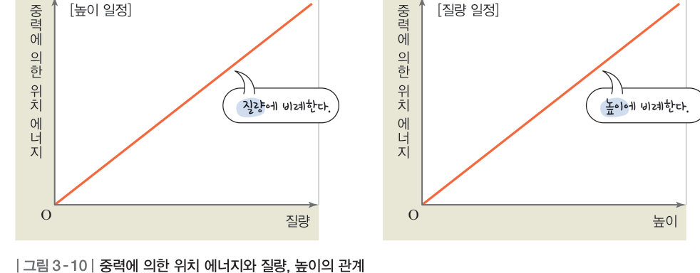
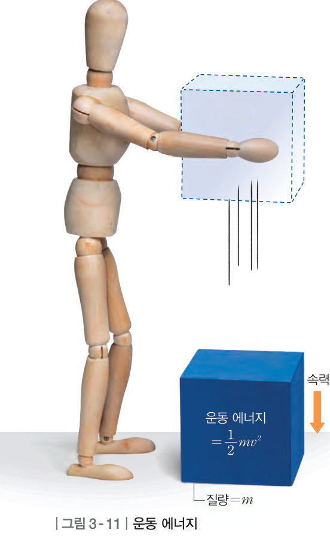
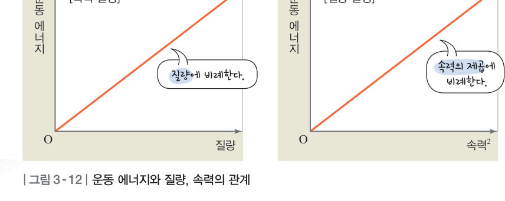
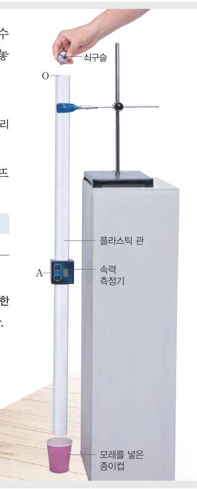

물체가 떨어질 때 생기는 에너지는 얼마일까? 가상 말뚝 박기로 추를 들어 올린 일이 위치 에너지가 되는 과정을 확인하고, 가상 속력 측정기로 자유 낙하 하는 쇠구슬의 운동 에너지를 재어 중력이 한 일과 비교해 보자.
높은 곳에 있는 물은 물레방아를 돌리는 일을 할 수 있고, 바람은 돛단배를 미는 일을 할 수 있다. 이와 같이 높은 곳에 있는 물체나 움직이는 물체는 일을 할 수 있는 능력이 있는데, 일을 할 수 있는 능력을 에너지라고 한다.

추를 들어 올리는 일을 하면 추의 에너지가 증가하는데, 이는 중력에 대해 한 일이 추의 에너지로 전환되었기 때문이다. 추를 떨어뜨리면 추는 떨어지면서 말뚝을 박는 일을 하는데, 이는 추의 에너지가 일로 전환되었기 때문이다. 이와 같이 일과 에너지는 서로 전환될 수 있으며, 에너지의 단위는 일의 단위와 같은 J(줄)을 사용한다.
일정한 속력으로 물체를 들어 올릴 때에는 중력에 대해 한 일이 물체의 위치 에너지가 된다. 질량이 m(kg)인 물체를 높이 h(m)만큼 들어 올릴 때 중력에 대해 한 일 = 물체의 무게 × 올라간 높이 = 9.8 × 질량 × 올라간 높이 = 9.8mh 이다. 따라서 중력에 의한 위치 에너지(J) = 9.8mh 이다. 중력에 의한 위치 에너지는 질량과 높이에 비례한다.


물체를 높은 곳에서 가만히 놓아 물체가 자유 낙하를 하면 중력이 물체에 한 일이 물체의 운동 에너지가 된다. 질량이 m(kg)인 물체가 속력 v(m/s)로 운동할 때 운동 에너지(J) = ½ × 질량 × 속력² = ½mv² 이다. 물체의 질량이 2 배, 3 배가 되면 운동 에너지는 2 배, 3 배가 되고, 속력이 2 배, 3 배가 되면 운동 에너지는 4 배, 9 배가 된다.


물체가 자유 낙하 하는 동안 중력이 물체에 한 일의 양과 물체의 운동 에너지가 같다. 이는 물체가 자유 낙하 할 때 중력이 한 일이 모두 운동 에너지로 전환되기 때문이다.
| 평가 기준 | 스스로 평가 |
|---|---|
| 탐구 기능 쇠구슬이 자유 낙하 할 수 있도록 실험 기구를 설치하였는가? | |
| 탐구 기능 일의 양과 운동 에너지를 옳게 구하였는가? | |
| 인성 서로 역할을 분담하여 실험을 수행하였는가? |
| ⑴ 에너지는 일을 할 수 있는 능력으로 단위로는 J(줄)을 사용한다. | |
| ⑵ 일과 에너지는 서로 전환될 수 있다. | |
| ⑶ 댐에 고인 물, 날아가는 야구공, 땅에 놓여 있는 돌은 모두 에너지를 가진다. |
| 평가 기준 | 스스로 평가 |
|---|---|
| 일과 에너지의 관계를 설명할 수 있다. | |
| 중력에 대해 한 일을 위치 에너지로, 중력이 한 일을 운동 에너지로 표현할 수 있다. |